Atelier
By hand
Drawing, painting and model-making are where many of my ideas start, long before the computer. A selection of portraits, studies, paintings and handmade models from architecture school.
Drawings, paintings and studies

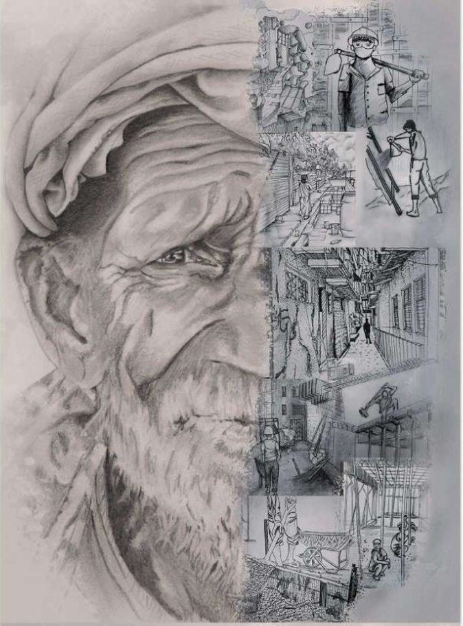

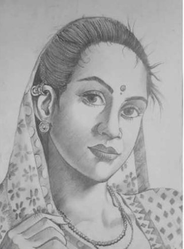

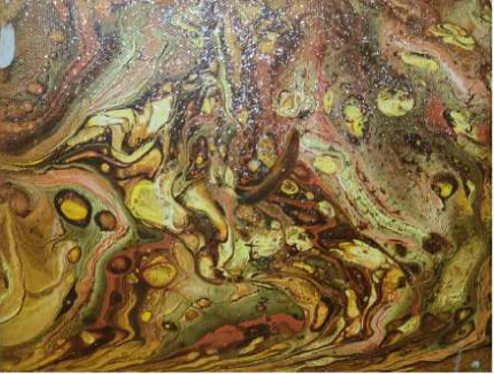

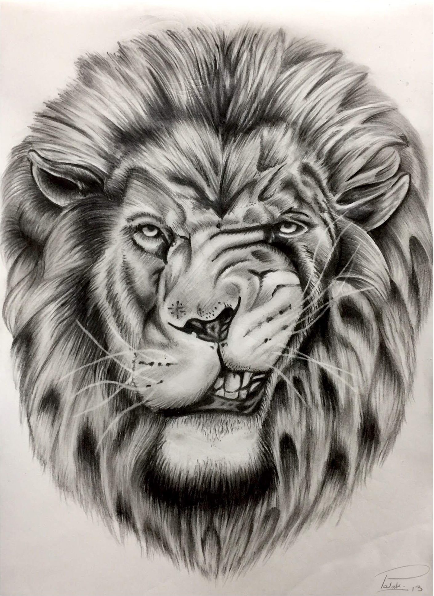

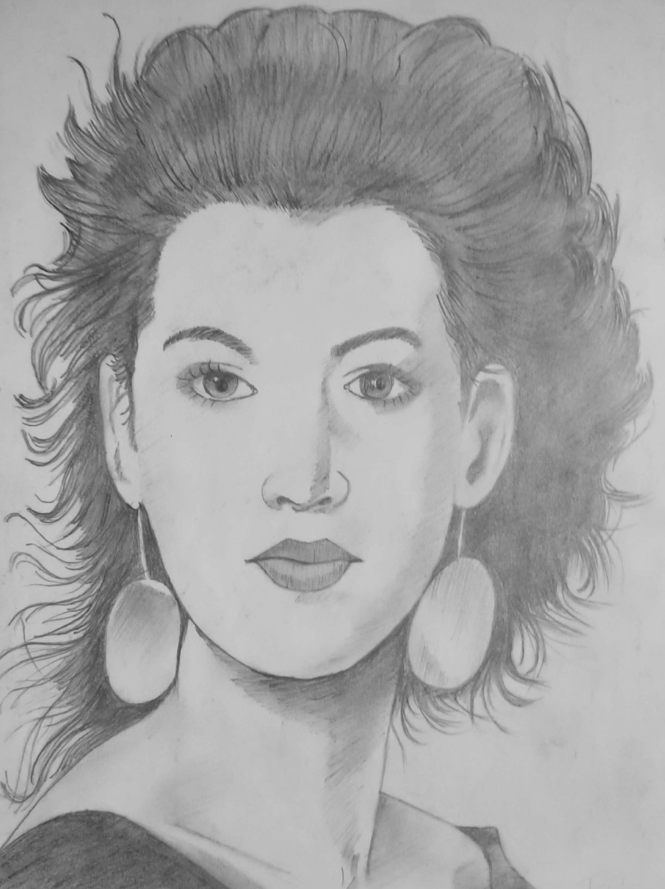

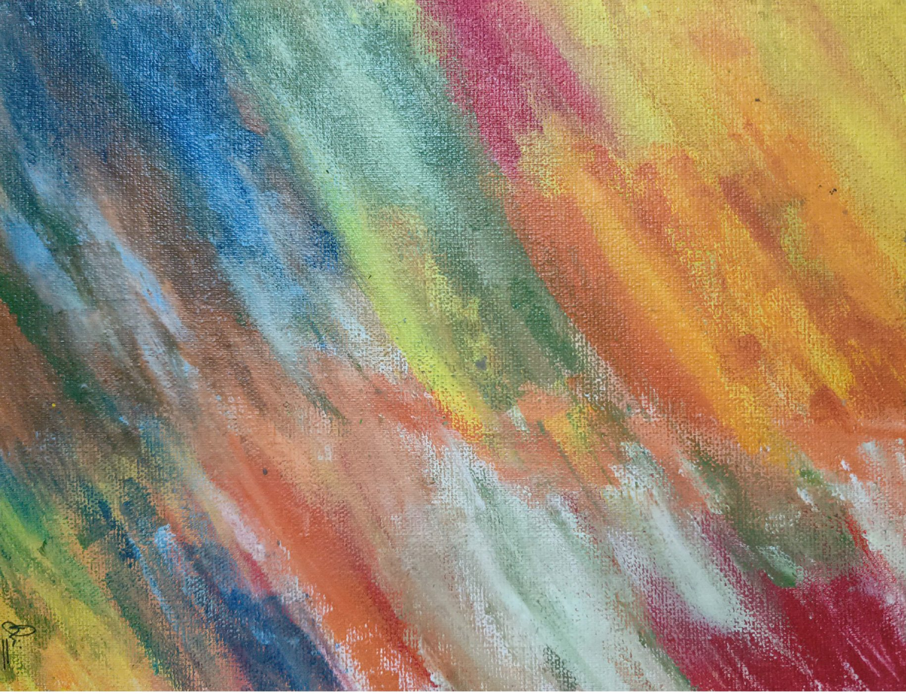

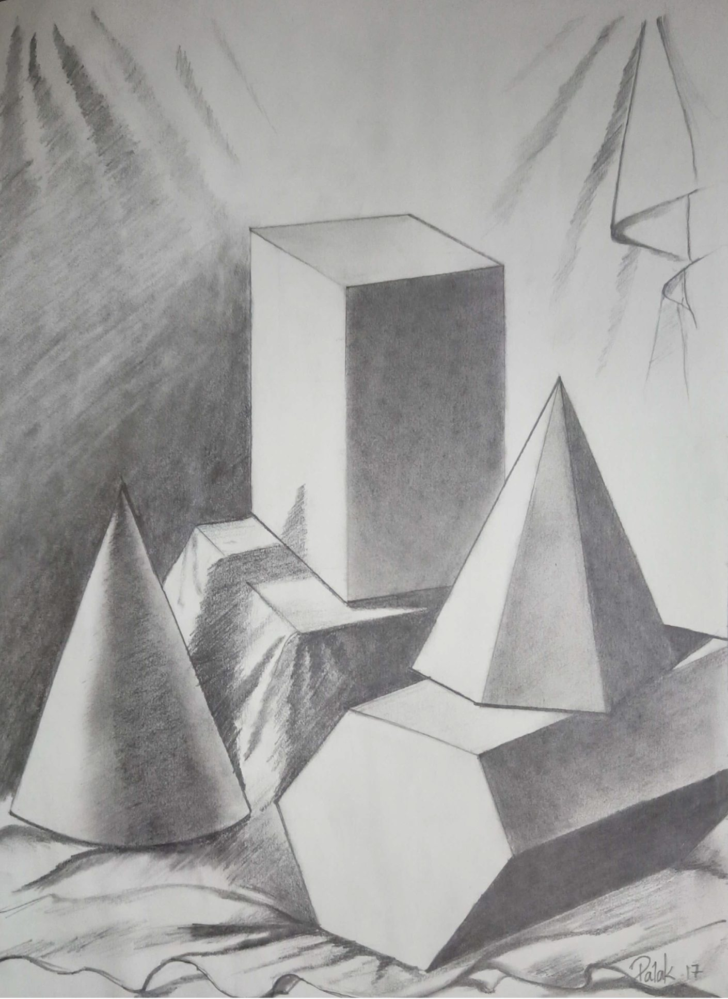

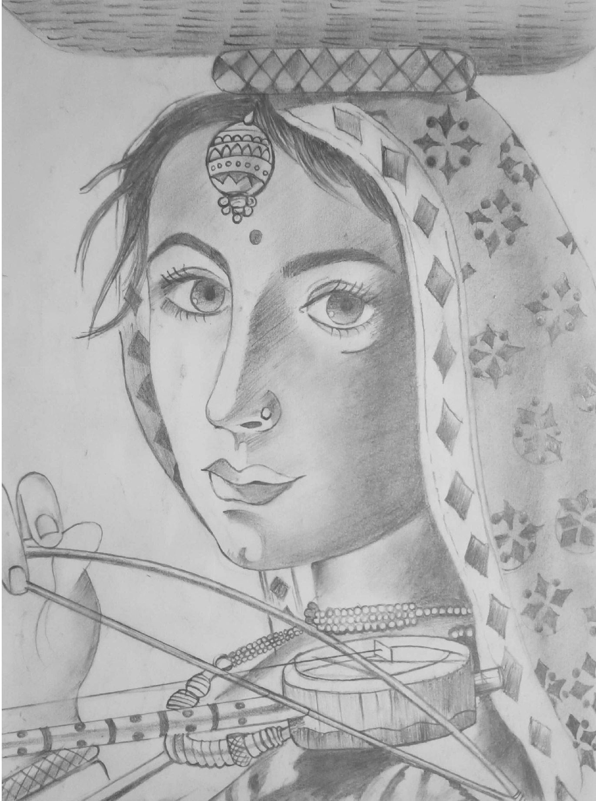

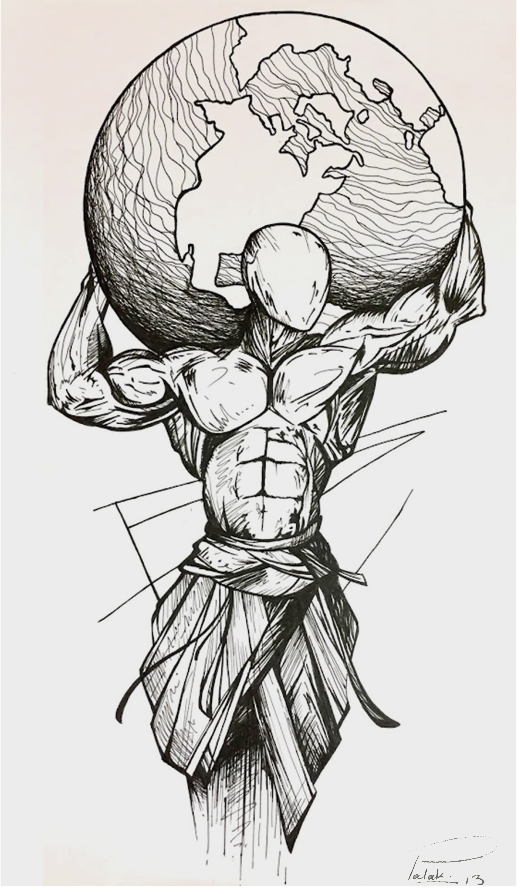

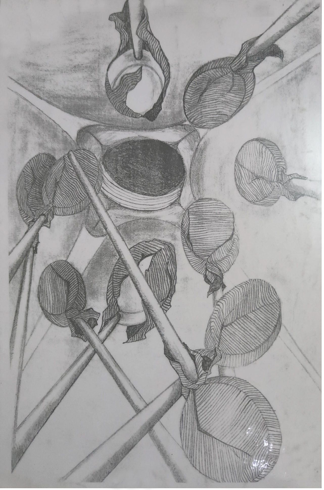

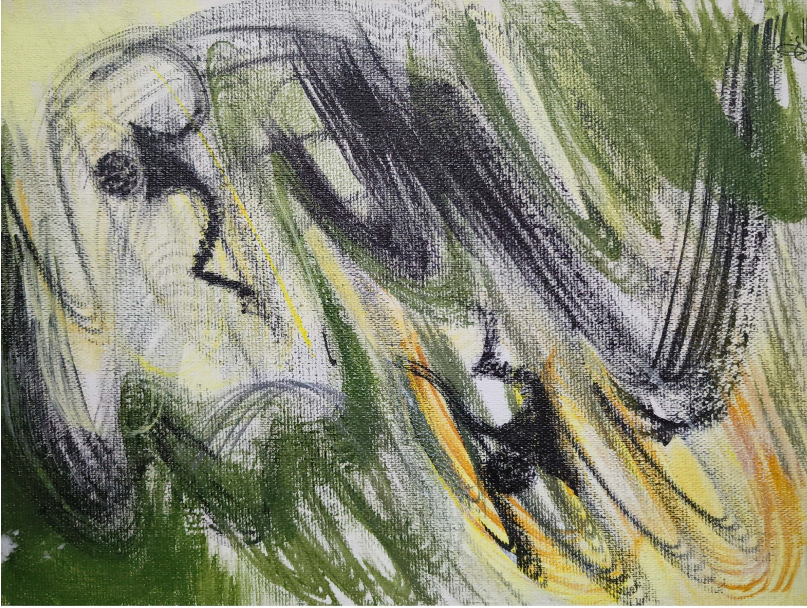

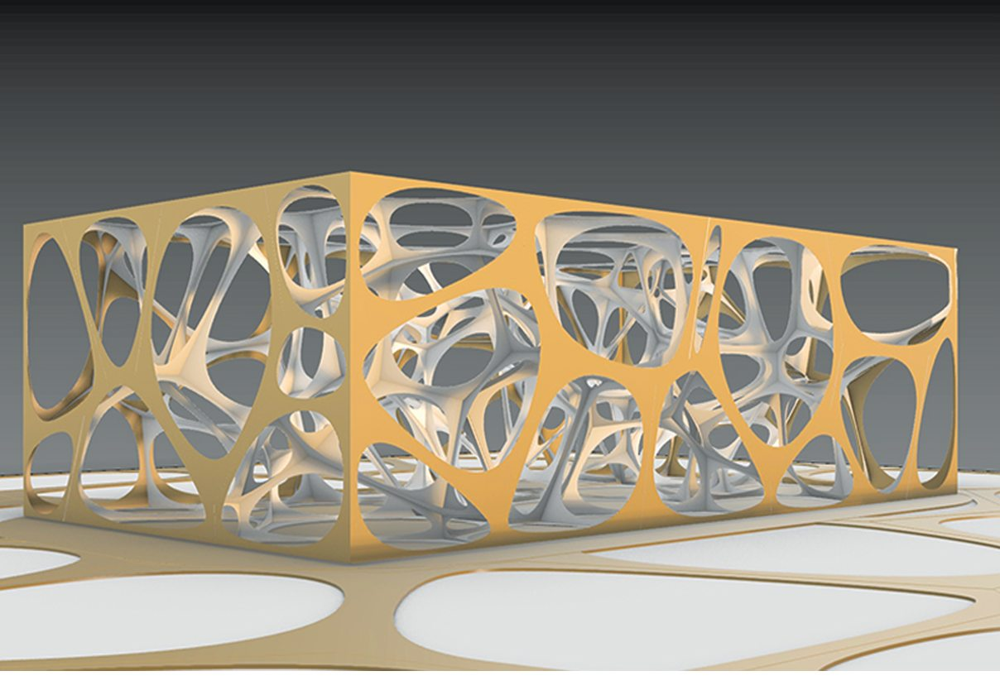

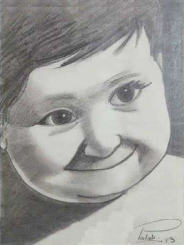

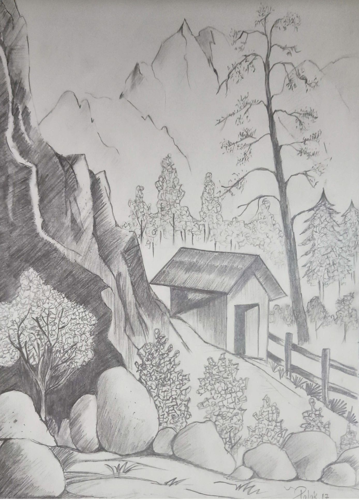

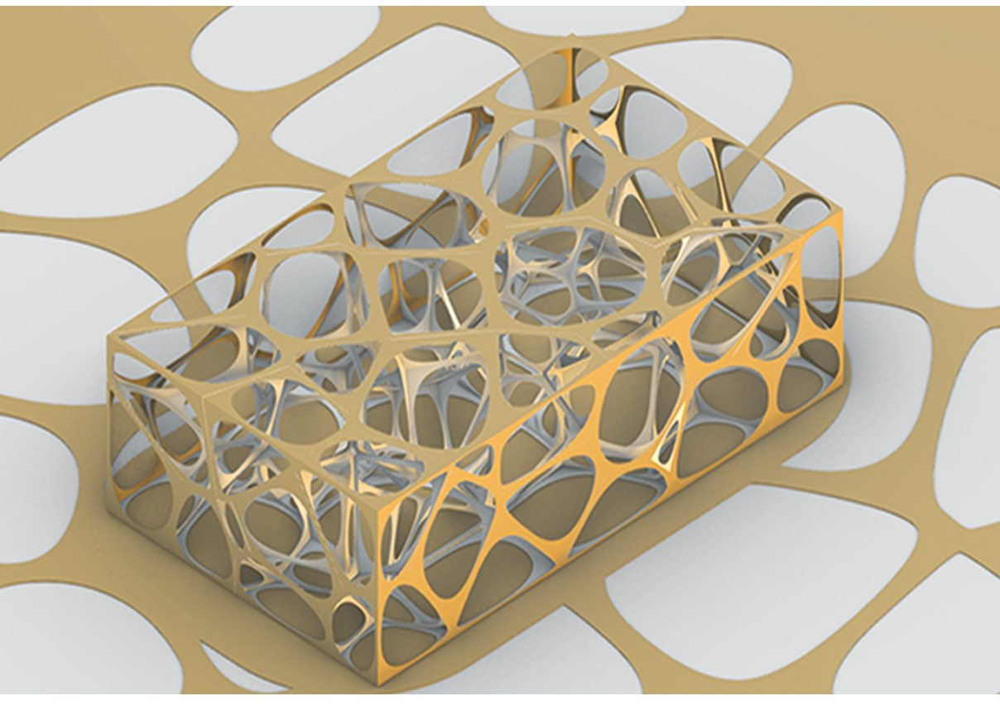
Handmade models
Physical models built by hand to test form, structure and composition.